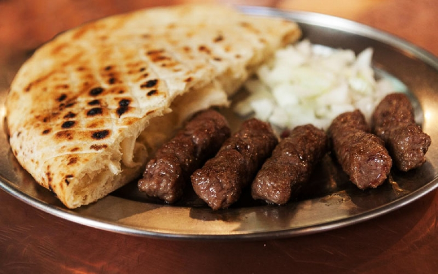
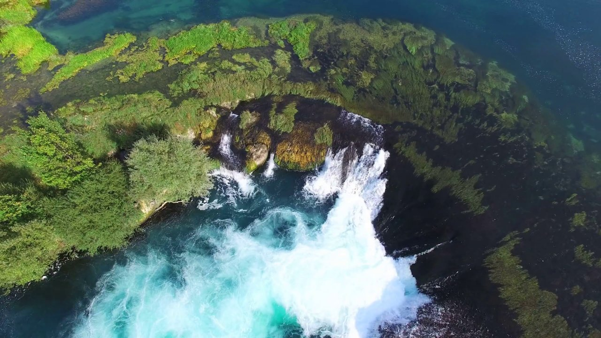
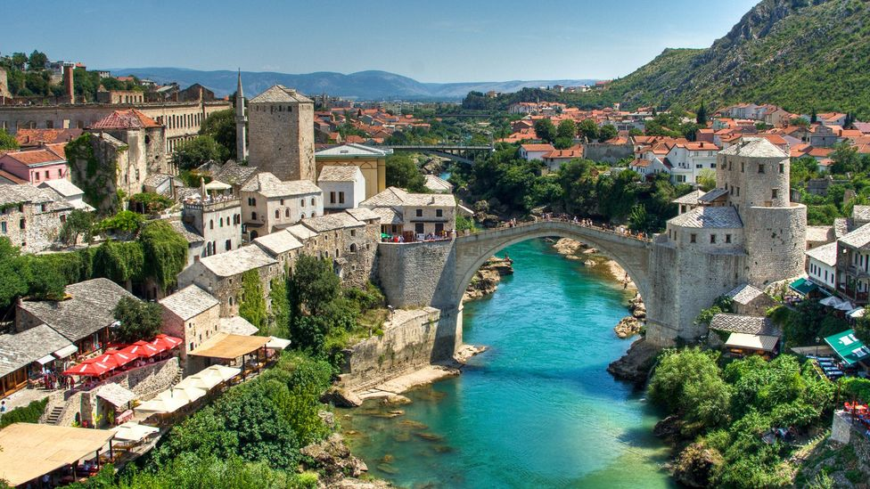
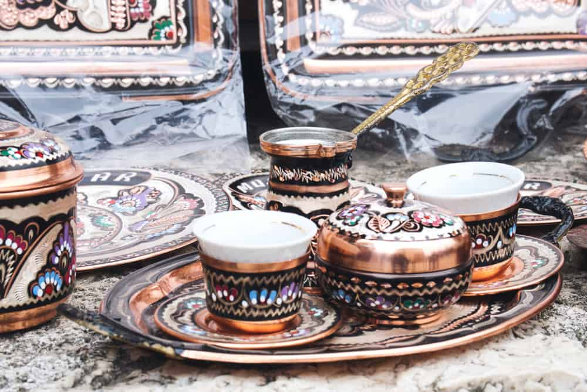

Visit the heart-shaped country, the place where the East meets the West, the country with
exceptionally rich gastronomy, magical natural beauty and warm-hearted people. Enjoy
the Bosnian coffee drinking ritual.
In a very short period Bosnia and Herzegovina has become a well-known tourist and one
Europe’s exotic destinations. The cities and towns of Bosnia and Herzegovina have rich
history, beautiful nature, tasty local food and warm-hearted and pleasant people. People
in Bosnia and Herzegovina know how to enjoy. We invite you to be our guests! Below we
shall endeavor to give you a taste of some of the beauties of our country and share with
you opinions of those who have experienced a breath of this ambiance. Many famous
magazines and adventurers have rated Bosnia and Herzegovina’s sights very high. We
give to you ten reasons we believe should make you decide to visit Bosnia and
Herzegovina.
#1 LANDSCAPES OF BOSNIA AND HERZEGOVINA
Naša tradicija pružanja turističkih usluga vezana je za dva datuma, 2018. godine, kada smo počeli sa
svojom djelatnošću kao prva BH online agencija pod nazivom GoBook.
#2 THE PAST
In some towns you have a feeling that the time has stood still; local population still
honors old customs and lifestyle. The air appears to be cleaner and you have this feeling
that everyone knows everyone.
#3 EXCELLENT INEXPENSIVE FOOD
Bosnia and Herzegovina is a true gourmet paradise. Here you can taste various dishes
hailing from Ottoman, Austro-Hungarian and Balkan cuisines. The food is almost
completely locally produced and the guests are offered a great choice of delicacies.

#4 GOOD HOSTS
Our people are known as “merhametli” (kind-hearted) – people who are ready to offer you
the warmest and most hospitable welcome. There are no limitations, we easily make true
friendships, not few of which last a lifetime.
#5 SPIRIT OF ADVENTURE
In Bosnia and Herzegovina at the same time you can enjoy mountaineering, mountain
biking, rafting, swimming or skiing. Few countries can boast of such natural beauties!
#6 HISTORY-RICH AND DIVERSE SARAJEVO
Sarajevo is the capital which brings together the East and the West. One moment you
believe that you are in Vienna, the next moment you feel a breath of Istanbul. Despite the
recent war period which left deep scars, Sarajevo is a city radiant with life and where
people live their lives to the fullest. Each times it enchants you with its beauties which
are not easy to forget.
#7 BEAUTIFUL UNA
Una offers magical rapids and waterfalls, which can satisfy the adventurous spirit of
even the most demanding guests. In late July, the now famous Una Regata takes place,
attracting a significant number of adventurers.

#8 MOSTAR OLD BRIDGE
Thanks to its appearance and features, Mostar and the Old Bridge will captivate you with
their history. After the war and destruction of the Old Bridge, the bridge was
reconstructed and each summer the traditional Old Bridge Diving Competition takes
place there.

#9 COFFEE-DRINKING CULTURE
If you want to have a nice talk with your friends in Bosnia, coffee is unavoidable! It has
become a part of a mandatory ritual which makes us relax and enjoy. Sarajevo is one of
those cities which offer an endless number of both oriental and European style cafés,
where visitors can just sit back, enjoy and have a cup of coffee. Traditional Bosnian
coffee is served in a small cezve pot often with a Turkish delight to sweeten it up.

#10 FORTRESSES
In 15 th century the Ottomans arrived to these areas and captured the Bosnian medieval
fortresses which they additional fortified and built new ones. Those fortresses were
given over to the Austro-Hungarian Empire later on, and they continued to improve them.
Jajce is the town with one of the most famous fortresses in Bosnia. Once it was the royal
seat of Bosnia’s medieval kings. Other towns which boast well preserved medieval
fortresses include: Gradačac, Tešanj, Maglaj, Banja Luka, Doboj…
Our agency’s goal is to help you see and experience the beauty of Bosnia and
Herzegovina in the best way possible. We thank everyone who decides to put their trust
in us!
DISCOVER BOSNIA WITH US!